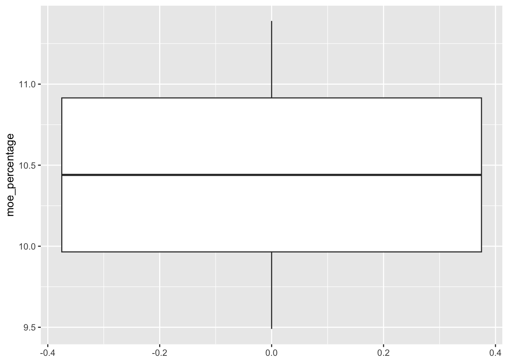

# Load required packages (hint: you need tidycensus, tidyverse, and knitr)
library(tidycensus)
library(tidyverse)
library(knitr)
# Set your Census API key
census_api_key("c61294d533815353a666f356be78c2a75d0b1f00")
# Choose your state for analysis - assign it to a variable called my_state
my_state <- "New York"Lab 1: Census Data Quality for Policy Decisions
Evaluating Data Reliability for Algorithmic Decision-Making
Assignment Overview
Scenario
You are a data analyst for the [Your State] Department of Human Services. The department is considering implementing an algorithmic system to identify communities that should receive priority for social service funding and outreach programs. Your supervisor has asked you to evaluate the quality and reliability of available census data to inform this decision.
Drawing on our Week 2 discussion of algorithmic bias, you need to assess not just what the data shows, but how reliable it is and what communities might be affected by data quality issues.
Learning Objectives
- Apply dplyr functions to real census data for policy analysis
- Evaluate data quality using margins of error
- Connect technical analysis to algorithmic decision-making
- Identify potential equity implications of data reliability issues
- Create professional documentation for policy stakeholders
Submission Instructions
Submit by posting your updated portfolio link on Canvas. Your assignment should be accessible at your-portfolio-url/labs/lab_1/
Make sure to update your _quarto.yml navigation to include this assignment under an “Labs” menu.
Part 1: Portfolio Integration
Create this assignment in your portfolio repository under an labs/lab_1/ folder structure. Update your navigation menu to include:
- text: Assignments
menu:
- href: labs/lab_1/your_file_name.qmd
text: "Lab 1: Census Data Exploration"If there is a special character like a colon, you need use double quote mark so that the quarto can identify this as text
Setup
State Selection: I have chosen New York for this analysis because: this is my home state.
Part 2: County-Level Resource Assessment
2.1 Data Retrieval
Your Task: Use get_acs() to retrieve county-level data for your chosen state.
Requirements: - Geography: county level - Variables: median household income (B19013_001) and total population (B01003_001)
- Year: 2022 - Survey: acs5 - Output format: wide
Hint: Remember to give your variables descriptive names using the variables = c(name = "code") syntax.
# Write your get_acs() code here
state_data <- get_acs(
geography = "county",
variables = c(medHHinc = "B19013_001", totpop = "B01003_001"),
year = 2022,
survey = "acs5",
output = "wide",
state = my_state
)
# Clean the county names to remove state name and "County"
# Hint: use mutate() with str_remove()
ny_clean <- state_data %>%
mutate(
#remove state name form county names
county_name = str_remove(NAME, ", New York"),
#remove "County" word
county_name = str_remove(county_name, " County")
)
# Display the first few rows
head(ny_clean)# A tibble: 6 × 7
GEOID NAME medHHincE medHHincM totpopE totpopM county_name
<chr> <chr> <dbl> <dbl> <dbl> <dbl> <chr>
1 36001 Albany County, New York 78829 2049 315041 NA Albany
2 36003 Allegany County, New Yo… 58725 1965 47222 NA Allegany
3 36005 Bronx County, New York 47036 890 1443229 NA Bronx
4 36007 Broome County, New York 58317 1761 198365 NA Broome
5 36009 Cattaraugus County, New… 56889 1778 77000 NA Cattaraugus
6 36011 Cayuga County, New York 63227 2736 76171 NA Cayuga select(ny_clean, NAME, county_name)# A tibble: 62 × 2
NAME county_name
<chr> <chr>
1 Albany County, New York Albany
2 Allegany County, New York Allegany
3 Bronx County, New York Bronx
4 Broome County, New York Broome
5 Cattaraugus County, New York Cattaraugus
6 Cayuga County, New York Cayuga
7 Chautauqua County, New York Chautauqua
8 Chemung County, New York Chemung
9 Chenango County, New York Chenango
10 Clinton County, New York Clinton
# ℹ 52 more rows2.2 Data Quality Assessment
Your Task: Calculate margin of error percentages and create reliability categories.
Requirements: - Calculate MOE percentage: (margin of error / estimate) * 100 - Create reliability categories: - High Confidence: MOE < 5% - Moderate Confidence: MOE 5-10%
- Low Confidence: MOE > 10% - Create a flag for unreliable estimates (MOE > 10%)
Hint: Use mutate() with case_when() for the categories.
# Calculate MOE percentage and reliability categories using mutate()
ny_reliability <- ny_clean %>%
mutate(moe_percentage = round((medHHincM / medHHincE)* 100, 2),
reliability = case_when(
moe_percentage < 5 ~ "High Confidence",
moe_percentage >= 5 & moe_percentage <= 10 ~ "Moderate",
moe_percentage > 10 ~ "Low Confidence"
))
# Create a summary showing count of counties in each reliability category
# Hint: use count() and mutate() to add percentages
count(ny_reliability, reliability)# A tibble: 3 × 2
reliability n
<chr> <int>
1 High Confidence 56
2 Low Confidence 1
3 Moderate 5 # why mutate?2.3 High Uncertainty Counties
Your Task: Identify the 5 counties with the highest MOE percentages.
Requirements: - Sort by MOE percentage (highest first) - Select the top 5 counties - Display: county name, median income, margin of error, MOE percentage, reliability category - Format as a professional table using kable()
Hint: Use arrange(), slice(), and select() functions.
# Create table of top 5 counties by MOE percentage
high_uncertainty <- ny_reliability %>%
filter(moe_percentage > 8) %>%
arrange(desc(moe_percentage)) %>%
slice(1:5) %>%
select(county_name, medHHincE, medHHincM, moe_percentage, reliability)
head(high_uncertainty)# A tibble: 2 × 5
county_name medHHincE medHHincM moe_percentage reliability
<chr> <dbl> <dbl> <dbl> <chr>
1 Hamilton 66891 7622 11.4 Low Confidence
2 Schuyler 61316 5818 9.49 Moderate # Format as table with kable() - include appropriate column names and caption
kable(high_uncertainty,
col.names = c("County","Median Income", "Median Income MOE", "MOE %",
"Reliability"),
caption = "Counties with Highest Income Data Uncertainty",
format.args = list(big.mark = ','))| County | Median Income | Median Income MOE | MOE % | Reliability |
|---|---|---|---|---|
| Hamilton | 66,891 | 7,622 | 11.39 | Low Confidence |
| Schuyler | 61,316 | 5,818 | 9.49 | Moderate |
# looking at range of values of MOE percentages
ggplot(high_uncertainty, aes(y = moe_percentage)) +
geom_boxplot()
summary(high_uncertainty$moe_percentage) Min. 1st Qu. Median Mean 3rd Qu. Max.
9.490 9.965 10.440 10.440 10.915 11.390 Data Quality Commentary:
[Write 2-3 sentences explaining what these results mean for algorithmic decision-making. Consider: Which counties might be poorly served by algorithms that rely on this income data? What factors might contribute to higher uncertainty?]
[Counties poorly served by algorithms that rely on this income data could be those that have a smaller population size. In these cases, the income data could be susceptible to skewing by one or two households who make a larger income than most other households. With greater uncertainty, government allocation of resources, in turn, may be less likely to occur or be more or less plentiful than for other counties in the state, generating inefficient funding allocations.]
Part 3: Neighborhood-Level Analysis
3.1 Focus Area Selection
Your Task: Select 2-3 counties from your reliability analysis for detailed tract-level study.
Strategy: Choose counties that represent different reliability levels (e.g., 1 high confidence, 1 moderate, 1 low confidence) to compare how data quality varies.
# Use filter() to select 2-3 counties from your county_reliability data
# Store the selected counties in a variable called selected_counties
selected_counties <- ny_reliability %>%
filter(county_name %in% c("Queens", "Schuyler", "Hamilton")) %>%
select(county_name, medHHincE, moe_percentage, reliability)
# Display the selected counties with their key characteristics
# Show: county name, median income, MOE percentage, reliability category
head(selected_counties)# A tibble: 3 × 4
county_name medHHincE moe_percentage reliability
<chr> <dbl> <dbl> <chr>
1 Hamilton 66891 11.4 Low Confidence
2 Queens 82431 1.06 High Confidence
3 Schuyler 61316 9.49 Moderate Comment on the output: [The highest household income is associated with the county with the highest reliability score, whereas the remaining two ‘moderate’ and ‘low confidence’ counties show median household incomes in the $60,000’s]
3.2 Tract-Level Demographics
Your Task: Get demographic data for census tracts in your selected counties.
Requirements: - Geography: tract level - Variables: white alone (B03002_003), Black/African American (B03002_004), Hispanic/Latino (B03002_012), total population (B03002_001) - Use the same state and year as before - Output format: wide - Challenge: You’ll need county codes, not names. Look at the GEOID patterns in your county data for hints.
# Define your race/ethnicity variables with descriptive names
# Use get_acs() to retrieve tract-level data
# Hint: You may need to specify county codes in the county parameter
selected_demographics <- get_acs(
geography = "tract",
variables = c(white_alone = "B03002_003", black = "B03002_004", hisp_lat = "B03002_012", tot_pop = "B03002_001"),
year = 2022,
survey = "acs5",
output = "wide",
state = my_state,
county = c(047, 097, 081))
# Calculate percentage of each group using mutate()
# Create percentages for white, Black, and Hispanic populations
demographics_with_pcts <- selected_demographics %>%
mutate(pct_white = round((white_aloneE/tot_popE)*100,2),
pct_black = round((blackE/tot_popE)*100,2),
pct_hisplat = round((hisp_latE/tot_popE)*100,2)
)
# Add readable tract and county name columns using str_extract() or similar
demographics_clean <- demographics_with_pcts %>%
mutate(
#remove Census Tract and number from county name
county_name = str_remove(NAME, "Census Tract \\d+;"),
county_name = str_remove(county_name, "Census Tract \\d+\\.\\d*;"),
#remove state name and "County" word from county names
county_name = str_remove(county_name, "County; New York"),
#remove county and state
tract = str_remove(NAME, ";.*"),
tract = str_remove(tract, "Census Tract")
)
head(demographics_clean)# A tibble: 6 × 15
GEOID NAME white_aloneE white_aloneM blackE blackM hisp_latE hisp_latM
<chr> <chr> <dbl> <dbl> <dbl> <dbl> <dbl> <dbl>
1 36047000100 Censu… 3231 638 861 286 426 254
2 36047000200 Censu… 246 146 42 34 844 264
3 36047000301 Censu… 3518 658 48 50 264 167
4 36047000501 Censu… 2934 395 208 121 502 220
5 36047000502 Censu… 2189 246 43 37 119 64
6 36047000700 Censu… 3060 563 136 96 242 123
# ℹ 7 more variables: tot_popE <dbl>, tot_popM <dbl>, pct_white <dbl>,
# pct_black <dbl>, pct_hisplat <dbl>, county_name <chr>, tract <chr>3.3 Demographic Analysis
Your Task: Analyze the demographic patterns in your selected areas.
# Find the tract with the highest percentage of Hispanic/Latino residents
# Hint: use arrange() and slice() to get the top tract
highest_pct_hisplat <- demographics_clean %>%
arrange(desc(pct_hisplat)) %>%
slice(1)
# Calculate average demographics by county using group_by() and summarize()
# Show: number of tracts, average percentage for each racial/ethnic group
count(demographics_clean, county_name) #find total census tracts for each county# A tibble: 3 × 2
county_name n
<chr> <int>
1 " Kings " 805
2 " Queens " 725
3 " Schuyler " 5county_avg_demographics <- demographics_clean %>%
group_by(county_name) %>%
summarize(
n_tracts = n(),
avg_pct_white = round(mean(pct_white, na.rm = TRUE), 2),
avg_pct_black = round(mean(pct_black, na.rm = TRUE), 2),
avg_pct_hisplat = round(mean(pct_hisplat, na.rm = TRUE), 2),
avg_tot_pop = round(mean(tot_popE, na.rm = TRUE), 2)
)
# Create a nicely formatted table of your results using kable()
kable(county_avg_demographics,
col.names = c("County","Total Tracts", "% White", "% Black",
"% Hispanic/Latino", "Total Population"),
caption = "Queens, Schuyler and Hamilton Counties: Average Demographics",
format.args = list(big.mark = ','))| County | Total Tracts | % White | % Black | % Hispanic/Latino | Total Population |
|---|---|---|---|---|---|
| Kings | 805 | 36.48 | 28.04 | 18.23 | 3,328.72 |
| Queens | 725 | 23.91 | 18.42 | 27.07 | 3,256.31 |
| Schuyler | 5 | 92.97 | 1.09 | 1.93 | 3,571.00 |
Part 4: Comprehensive Data Quality Evaluation
4.1 MOE Analysis for Demographic Variables
Your Task: Examine margins of error for demographic variables to see if some communities have less reliable data.
Requirements: - Calculate MOE percentages for each demographic variable - Flag tracts where any demographic variable has MOE > 15% - Create summary statistics
# Calculate MOE percentages for white, Black, and Hispanic variables
# Hint: use the same formula as before (margin/estimate * 100)
# Create a flag for tracts with high MOE on any demographic variable
# Use logical operators (| for OR) in an ifelse() statement
county_dems_reliability <- demographics_clean %>%
# using ifelse() to guard against zeros that will give Inf results, messing up plots
mutate(moe_pct_white = ifelse(pct_white > 0, round((white_aloneM / white_aloneE)*100, 2), NA),
moe_pct_black = ifelse(pct_black > 0, round((blackM / blackE)*100, 2), NA),
moe_pct_hsp = ifelse(pct_hisplat > 0, round((hisp_latM / hisp_latE)*100, 2), NA),
high_moe_flag = ifelse(
moe_pct_white > 15 |
moe_pct_black > 15 |
moe_pct_hsp > 15,
1, 0
)
)
# assessing variability of each demographic variable moe percentage values
summary(county_dems_reliability$moe_pct_white) Min. 1st Qu. Median Mean 3rd Qu. Max. NA's
2.50 23.43 34.82 52.37 69.77 600.00 97 summary(county_dems_reliability$moe_pct_black) Min. 1st Qu. Median Mean 3rd Qu. Max. NA's
10.44 28.66 62.05 73.94 104.18 500.00 203 summary(county_dems_reliability$moe_pct_hsp) Min. 1st Qu. Median Mean 3rd Qu. Max. NA's
10.83 37.87 52.51 57.96 70.30 208.33 75 # Create summary statistics showing how many tracts have data quality issues
tracts_reliability_summary <- county_dems_reliability %>%
group_by(county_name) %>%
summarize(
total_tracts = n(),
tracts_with_issues = sum(high_moe_flag, na.rm = TRUE),
pct_tracts_with_issues = mean(high_moe_flag, na.rm = TRUE) * 100
)
head(tracts_reliability_summary)# A tibble: 3 × 4
county_name total_tracts tracts_with_issues pct_tracts_with_issues
<chr> <int> <dbl> <dbl>
1 " Kings " 805 779 100
2 " Queens " 725 689 100
3 " Schuyler " 5 5 100 # total_tracts and tracts_with_issues are not equal but the pct_tracts_with_issues are all 100% - the "missing" tracts are those with "NA" values4.2 Pattern Analysis
Your Task: Investigate whether data quality problems are randomly distributed or concentrated in certain types of communities.
# Group tracts by whether they have high MOE issues
tract_dems_reliability <- county_dems_reliability %>%
mutate(
white_reliability = case_when(
moe_pct_white <= 20 ~ "High",
moe_pct_white <= 40 ~ "Moderate",
moe_pct_white <= 60 ~ "Low",
TRUE ~ "Very low" # if no above conditions are met, assign tract "Very low" category; without this case_when() would return NAs
),
black_reliability = case_when(
moe_pct_black <= 20 ~ "High",
moe_pct_black <= 40 ~ "Moderate",
moe_pct_black <= 60 ~ "Low",
TRUE ~ "Very low"
),
hispanic_reliability = case_when(
moe_pct_hsp <= 20 ~ "High",
moe_pct_hsp <= 40 ~ "Moderate",
moe_pct_hsp <= 60 ~ "Low",
TRUE ~ "Very low"
)
)
high_uncertainty_tracts <- tract_dems_reliability %>%
filter(white_reliability == "Low",
black_reliability == "Low",
hispanic_reliability == "Low") %>%
slice(1:5) %>%
select(tract, pct_white, pct_black, pct_hisplat, tot_popE, white_reliability)
view(high_uncertainty_tracts)
# Calculate average characteristics for each group - population size, demographic percentages
# Use group_by() and summarize() to create this comparison
# white population - analysis
white_reliability_summary <- tract_dems_reliability %>%
group_by(white_reliability) %>%
summarize(
n_tracts = n(),
avg_pct_white = round(mean(pct_white), 2),
avg_tot_pop = round(mean(tot_popE), 2)
)
view(white_reliability_summary)
# black population - analysis
black_reliability_summary <- tract_dems_reliability %>%
group_by(black_reliability) %>%
summarize(
n_tracts = n(),
avg_pct_black = round(mean(pct_black), 2),
avg_tot_pop = round(mean(tot_popE), 2)
)
view(black_reliability_summary)
# hispanic/latino population - analysis
hsplat_reliability_summary <- tract_dems_reliability %>%
group_by(hispanic_reliability) %>%
summarize(
n_tracts = n(),
avg_pct_hsplat = round(mean(pct_hisplat), 2),
avg_tot_pop = round(mean(tot_popE), 2)
)
view(hsplat_reliability_summary)
# Create a professional table(s) showing the patterns
kable(white_reliability_summary,
col.names = c("Reliability","Total Tracts", "% White", "Total Population"),
caption = "Tract Average Demographic Characteristics by Data Reliability Levels",
format.args = list(big.mark = ','))| Reliability | Total Tracts | % White | Total Population |
|---|---|---|---|
| High | 205 | 64.03 | 3,628.46 |
| Low | 190 | 16.35 | 3,578.74 |
| Moderate | 614 | 43.50 | 3,583.60 |
| Very low | 526 | NaN | 2,726.57 |
kable(black_reliability_summary,
col.names = c("Reliability","Total Tracts", "% Black", "Total Population"),
caption = "Tract Average Demographic Characteristics by Data Reliability Levels",
format.args = list(big.mark = ','))| Reliability | Total Tracts | % Black | Total Population |
|---|---|---|---|
| High | 99 | 73.76 | 3,576.11 |
| Low | 161 | 18.80 | 3,545.30 |
| Moderate | 391 | 55.53 | 3,534.10 |
| Very low | 884 | NaN | 3,112.71 |
kable(hsplat_reliability_summary,
col.names = c("Reliability","Total Tracts", "% Hispanic/Latino", "Total Population"),
caption = "Tract Average Demographic Characteristics by Data Reliability Levels",
format.args = list(big.mark = ','))| Reliability | Total Tracts | % Hispanic/Latino | Total Population |
|---|---|---|---|
| High | 21 | 62.51 | 4,413.95 |
| Low | 462 | 20.44 | 3,517.03 |
| Moderate | 406 | 39.42 | 3,976.44 |
| Very low | 646 | NaN | 2,672.29 |
kable(high_uncertainty_tracts,
col.names = c("Tract", "% White", "% Black", "% Hispanic/Latino", "Total Population", "Reliability"),
caption = "Top 5 Tracts with Highest Data Uncertainty: Average Demographics",
format.args = list(big.mark = ','))| Tract | % White | % Black | % Hispanic/Latino | Total Population | Reliability |
|---|---|---|---|---|---|
| 233 | 33.26 | 28.93 | 22.40 | 6,821 | Low |
| 351.01 | 3.61 | 65.36 | 25.41 | 1,885 | Low |
| 96 | 3.56 | 15.31 | 14.32 | 3,344 | Low |
| 236 | 8.94 | 14.65 | 35.40 | 3,099 | Low |
| 466 | 6.12 | 23.43 | 18.54 | 4,806 | Low |
Pattern Analysis: [The tracts that tend to fall in the “high” reliability category are those with total populations that are on average above 3,500. The specific demographic race/ethnicity variables are also most reliable when the average population of the respective demographic groups are on average greater than 2000. The demographic estimates start to lose reliability (low and very low) when the average population amounts are below 700. Such observations align with the logic that error margins tend to increase, and therefore reliability decreases, when sample populations are small.]
Part 5: Policy Recommendations
5.1 Analysis Integration and Professional Summary
Your Task: Write an executive summary that integrates findings from all four analyses.
Executive Summary Requirements: 1. Overall Pattern Identification: What are the systematic patterns across all your analyses? 2. Equity Assessment: Which communities face the greatest risk of algorithmic bias based on your findings? 3. Root Cause Analysis: What underlying factors drive both data quality issues and bias risk? 4. Strategic Recommendations: What should the Department implement to address these systematic issues?
Executive Summary:
[1. Across all the analyses, places with low populations tend to produce higher margins of error for a given estimate. For example, median income values were least reliable in sparsely populated counties. The same was true for estimates of total populations of different race and ethnic groups across tracts, where the lowest reliability was associated with tracts where both a respective demographic group (white, black, hispanic/latino) represented a small share of the populationn and the total population of the census tract was low. 2. Based on these findings, the communities which face the greatest risk of algorithmic bias are those with low total populations and those where a specific racial or ethnic group’s population is also low. 3. One root cause of data quality issues associated with low populated areas is the difficulty of surveyors to reach their populations of interest. In more rural, remote places, peoples’ physical addresses may be inconsistent or missing. 4. The Department might consider greater in-person contact with small, more remote communities to develop community-informed strategies to best reach residents in the area, perhaps through engagement with community spaces like faith-based gathering centers.]
6.3 Specific Recommendations
Your Task: Create a decision framework for algorithm implementation.
# Create a summary table using your county reliability data
# Include: county name, median income, MOE percentage, reliability category
summary_table <- ny_reliability %>%
select(county_name, medHHincE, moe_percentage, reliability)
# Add a new column with algorithm recommendations using case_when():
# - High Confidence: "Safe for algorithmic decisions"
# - Moderate Confidence: "Use with caution - monitor outcomes"
# - Low Confidence: "Requires manual review or additional data"
summary_table1 <- summary_table %>%
mutate(recommendation = case_when(
moe_percentage < 5 ~ "Safe for algorithmic decisions",
moe_percentage >= 5 & moe_percentage <= 10 ~ "Use with caution - monitor outcomes",
moe_percentage > 10 ~ "Requires manual review or additional data"
))
summary_table1# A tibble: 62 × 5
county_name medHHincE moe_percentage reliability recommendation
<chr> <dbl> <dbl> <chr> <chr>
1 Albany 78829 2.6 High Confidence Safe for algorithmic de…
2 Allegany 58725 3.35 High Confidence Safe for algorithmic de…
3 Bronx 47036 1.89 High Confidence Safe for algorithmic de…
4 Broome 58317 3.02 High Confidence Safe for algorithmic de…
5 Cattaraugus 56889 3.13 High Confidence Safe for algorithmic de…
6 Cayuga 63227 4.33 High Confidence Safe for algorithmic de…
7 Chautauqua 54625 3.21 High Confidence Safe for algorithmic de…
8 Chemung 61358 4.03 High Confidence Safe for algorithmic de…
9 Chenango 61741 4.09 High Confidence Safe for algorithmic de…
10 Clinton 67097 4.18 High Confidence Safe for algorithmic de…
# ℹ 52 more rowsview(summary_table1)
# Format as a professional table with kable()
kable(summary_table1,
col.names = c("County", "Median Income", "% MOE", "Reliability", "Recommendation"),
caption = "NY County Median Income Data: Reliability and Recommendations",
format.args = list(big.mark = ','))| County | Median Income | % MOE | Reliability | Recommendation |
|---|---|---|---|---|
| Albany | 78,829 | 2.60 | High Confidence | Safe for algorithmic decisions |
| Allegany | 58,725 | 3.35 | High Confidence | Safe for algorithmic decisions |
| Bronx | 47,036 | 1.89 | High Confidence | Safe for algorithmic decisions |
| Broome | 58,317 | 3.02 | High Confidence | Safe for algorithmic decisions |
| Cattaraugus | 56,889 | 3.13 | High Confidence | Safe for algorithmic decisions |
| Cayuga | 63,227 | 4.33 | High Confidence | Safe for algorithmic decisions |
| Chautauqua | 54,625 | 3.21 | High Confidence | Safe for algorithmic decisions |
| Chemung | 61,358 | 4.03 | High Confidence | Safe for algorithmic decisions |
| Chenango | 61,741 | 4.09 | High Confidence | Safe for algorithmic decisions |
| Clinton | 67,097 | 4.18 | High Confidence | Safe for algorithmic decisions |
| Columbia | 81,741 | 3.39 | High Confidence | Safe for algorithmic decisions |
| Cortland | 65,029 | 4.42 | High Confidence | Safe for algorithmic decisions |
| Delaware | 58,338 | 3.67 | High Confidence | Safe for algorithmic decisions |
| Dutchess | 94,578 | 2.66 | High Confidence | Safe for algorithmic decisions |
| Erie | 68,014 | 1.18 | High Confidence | Safe for algorithmic decisions |
| Essex | 68,090 | 5.27 | Moderate | Use with caution - monitor outcomes |
| Franklin | 60,270 | 4.81 | High Confidence | Safe for algorithmic decisions |
| Fulton | 60,557 | 4.37 | High Confidence | Safe for algorithmic decisions |
| Genesee | 68,178 | 4.57 | High Confidence | Safe for algorithmic decisions |
| Greene | 70,294 | 6.18 | Moderate | Use with caution - monitor outcomes |
| Hamilton | 66,891 | 11.39 | Low Confidence | Requires manual review or additional data |
| Herkimer | 68,104 | 4.79 | High Confidence | Safe for algorithmic decisions |
| Jefferson | 62,782 | 3.64 | High Confidence | Safe for algorithmic decisions |
| Kings | 74,692 | 1.27 | High Confidence | Safe for algorithmic decisions |
| Lewis | 64,401 | 4.16 | High Confidence | Safe for algorithmic decisions |
| Livingston | 70,443 | 3.99 | High Confidence | Safe for algorithmic decisions |
| Madison | 68,869 | 4.04 | High Confidence | Safe for algorithmic decisions |
| Monroe | 71,450 | 1.35 | High Confidence | Safe for algorithmic decisions |
| Montgomery | 58,033 | 3.63 | High Confidence | Safe for algorithmic decisions |
| Nassau | 137,709 | 1.39 | High Confidence | Safe for algorithmic decisions |
| New York | 99,880 | 1.78 | High Confidence | Safe for algorithmic decisions |
| Niagara | 65,882 | 2.67 | High Confidence | Safe for algorithmic decisions |
| Oneida | 66,402 | 3.27 | High Confidence | Safe for algorithmic decisions |
| Onondaga | 71,479 | 1.57 | High Confidence | Safe for algorithmic decisions |
| Ontario | 76,603 | 2.94 | High Confidence | Safe for algorithmic decisions |
| Orange | 91,806 | 1.94 | High Confidence | Safe for algorithmic decisions |
| Orleans | 61,069 | 4.89 | High Confidence | Safe for algorithmic decisions |
| Oswego | 65,054 | 3.26 | High Confidence | Safe for algorithmic decisions |
| Otsego | 65,778 | 4.51 | High Confidence | Safe for algorithmic decisions |
| Putnam | 120,970 | 4.03 | High Confidence | Safe for algorithmic decisions |
| Queens | 82,431 | 1.06 | High Confidence | Safe for algorithmic decisions |
| Rensselaer | 83,734 | 2.27 | High Confidence | Safe for algorithmic decisions |
| Richmond | 96,185 | 2.60 | High Confidence | Safe for algorithmic decisions |
| Rockland | 106,173 | 2.88 | High Confidence | Safe for algorithmic decisions |
| St. Lawrence | 58,339 | 3.47 | High Confidence | Safe for algorithmic decisions |
| Saratoga | 97,038 | 2.26 | High Confidence | Safe for algorithmic decisions |
| Schenectady | 75,056 | 3.03 | High Confidence | Safe for algorithmic decisions |
| Schoharie | 71,479 | 3.96 | High Confidence | Safe for algorithmic decisions |
| Schuyler | 61,316 | 9.49 | Moderate | Use with caution - monitor outcomes |
| Seneca | 64,050 | 5.24 | Moderate | Use with caution - monitor outcomes |
| Steuben | 62,506 | 2.87 | High Confidence | Safe for algorithmic decisions |
| Suffolk | 122,498 | 1.18 | High Confidence | Safe for algorithmic decisions |
| Sullivan | 67,841 | 4.35 | High Confidence | Safe for algorithmic decisions |
| Tioga | 70,427 | 3.99 | High Confidence | Safe for algorithmic decisions |
| Tompkins | 69,995 | 4.01 | High Confidence | Safe for algorithmic decisions |
| Ulster | 77,197 | 4.52 | High Confidence | Safe for algorithmic decisions |
| Warren | 74,531 | 4.74 | High Confidence | Safe for algorithmic decisions |
| Washington | 68,703 | 3.41 | High Confidence | Safe for algorithmic decisions |
| Wayne | 71,007 | 3.10 | High Confidence | Safe for algorithmic decisions |
| Westchester | 114,651 | 1.56 | High Confidence | Safe for algorithmic decisions |
| Wyoming | 65,066 | 3.38 | High Confidence | Safe for algorithmic decisions |
| Yates | 63,974 | 5.84 | Moderate | Use with caution - monitor outcomes |
Key Recommendations:
Your Task: Use your analysis results to provide specific guidance to the department.
Counties suitable for immediate algorithmic implementation: [Albany, Allegany, Bronx, Broome, and Cattaraugus are all counties in NY that have high confidence data, meaning that they are appropriate for algorithmic implementation as there will be little concern that any analyzed values are mis-representative of reality due to small MOE percentages.]
Counties requiring additional oversight: [Essex, Greene, Schuyler, Seneca, and Yates are counties with moderate confidence data that would require some additional effort to verify whether the values provide an accurate reflection of reality in these areas, perhaps by supplementing the analysis of median income using proxy data such as home values.]
Counties needing alternative approaches: [ Hamilton county has low confidence median income data that will definitely require further survey collection to boost the count of the sample population in order to make reasonable inferences with the resulting data.]
Questions for Further Investigation
[1. How does one account for places where populations have recently fluctuated rapidly but their populations are large, likely producing smaller MOEs? 2. How have MOEs changed or not for key racial and ethnic groups over time?]
Technical Notes
Data Sources: - U.S. Census Bureau, American Community Survey 2018-2022 5-Year Estimates - Retrieved via tidycensus R package on [date]
Reproducibility: - All analysis conducted in R version [your version] - Census API key required for replication - Complete code and documentation available at: [your portfolio URL]
Methodology Notes: [Describe any decisions you made about data processing, county selection, or analytical choices that might affect reproducibility]
Limitations: [Note any limitations in your analysis - sample size issues, geographic scope, temporal factors, etc.]
Submission Checklist
Before submitting your portfolio link on Canvas:
Remember: Submit your portfolio URL on Canvas, not the file itself. Your assignment should be accessible at your-portfolio-url/labs/lab_1/your_file_name.html